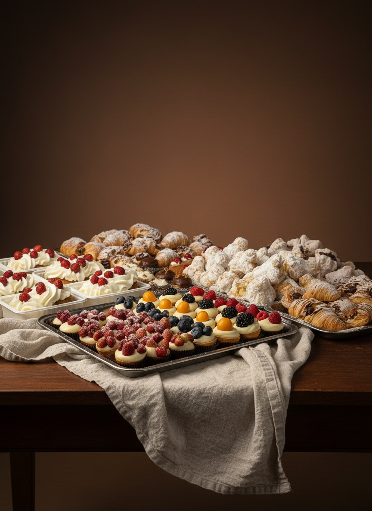
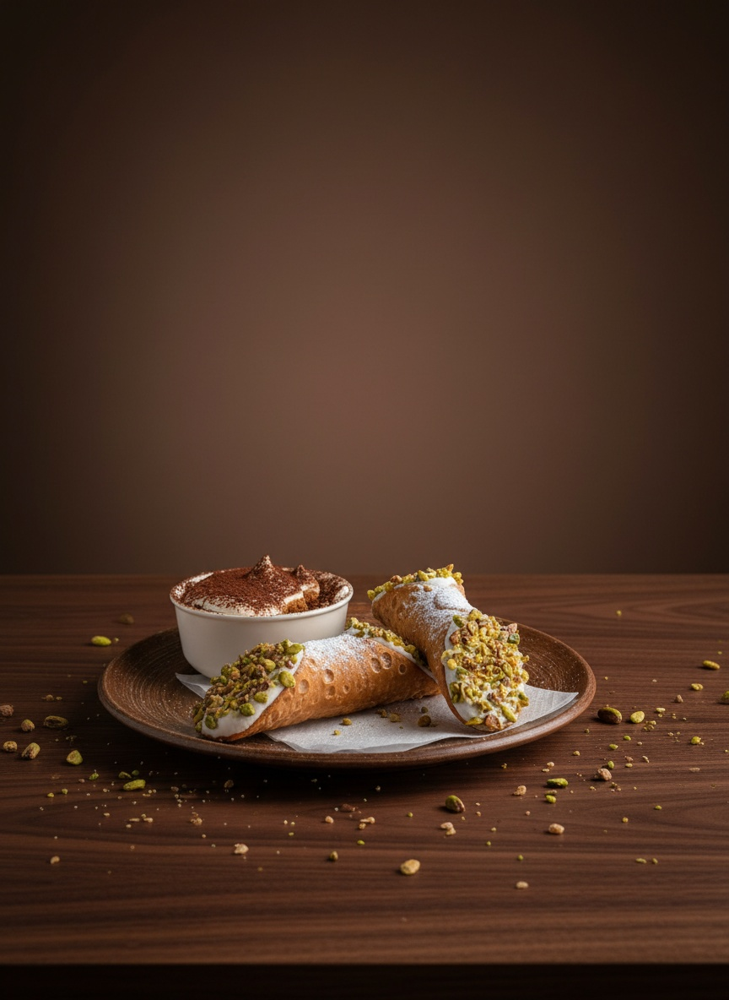
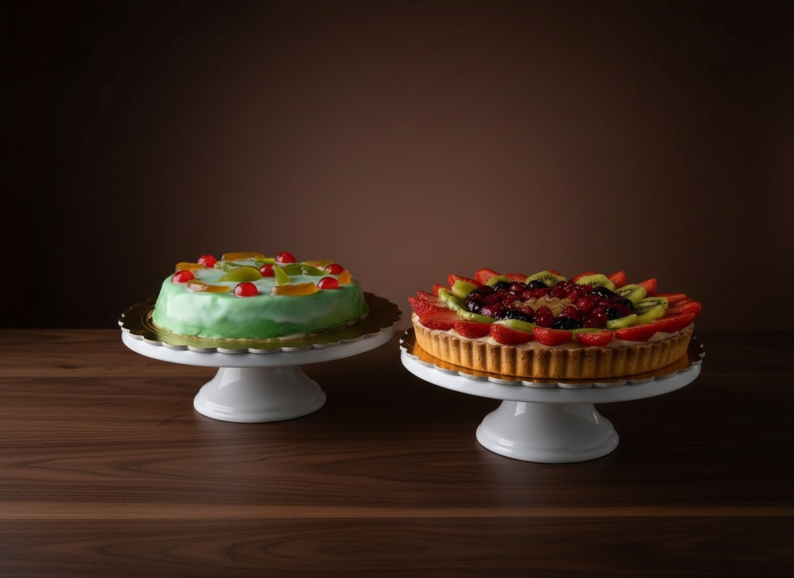
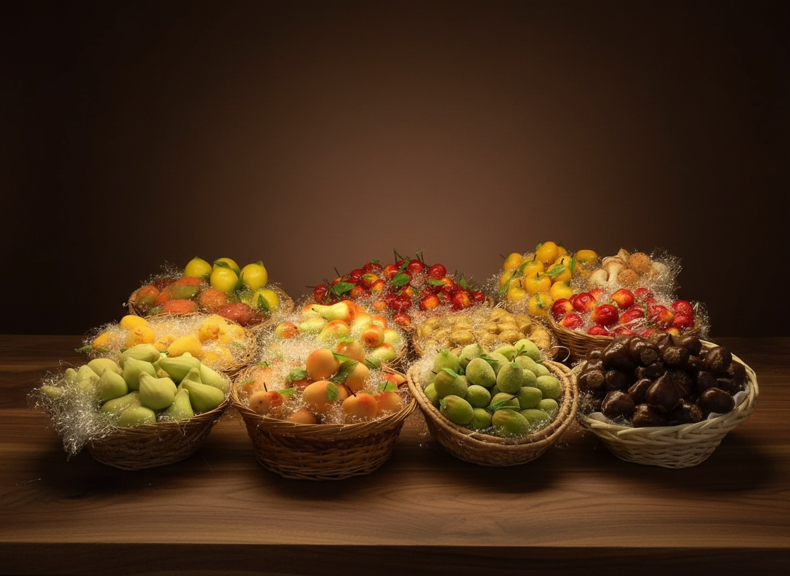
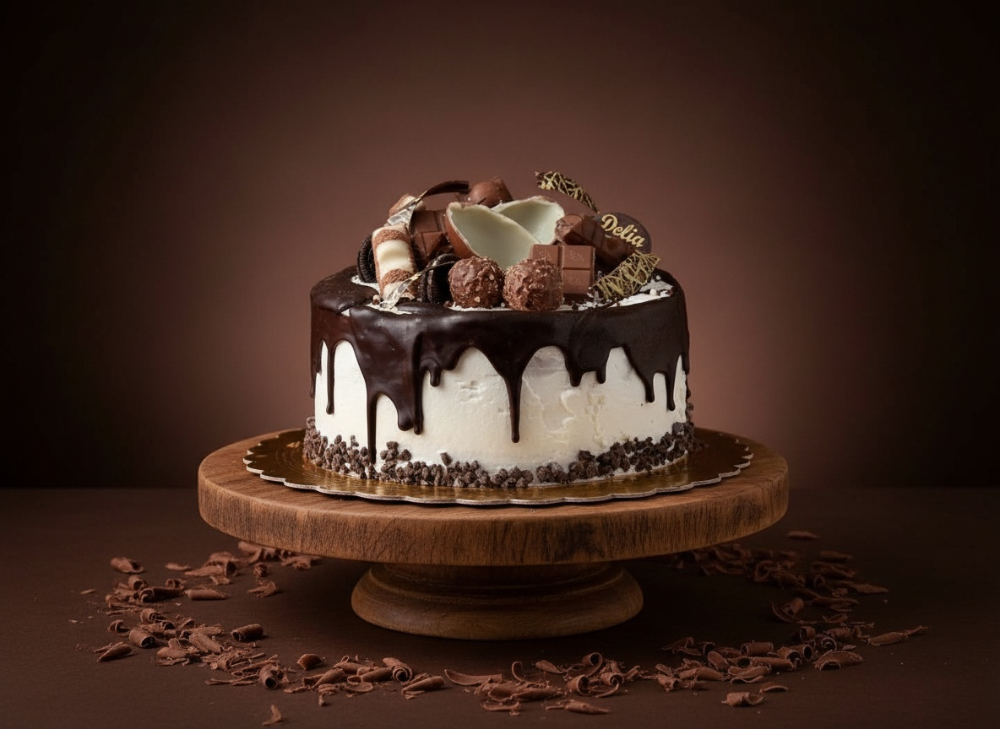
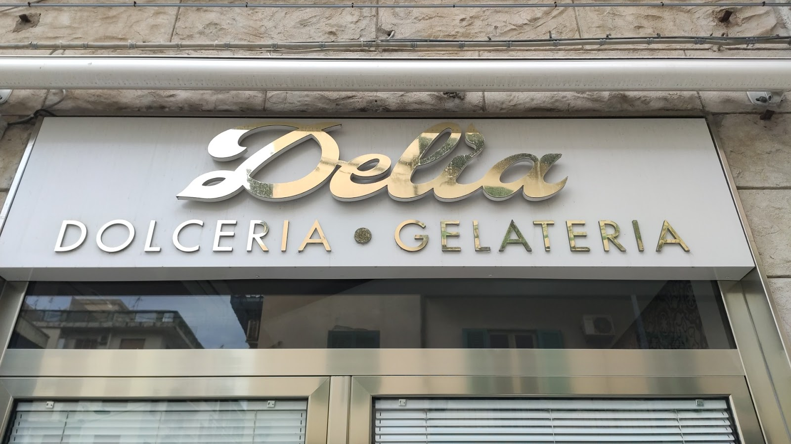

Cannoli e cassatine
Il cannolo al pistacchio è quello di cui parlano le recensioni. Le cassatine seguono la frutta, non il calendario.
Nella dolceria di via Lombardo Pellegrino il banco si riempie all’alba: cannoli al pistacchio, granita con la brioche, cassate e frutta martorana. Come trentanove anni fa.

Si prepara in giornata quello che il banco può vendere in giornata. Il resto si rifà domani mattina.

Il cannolo al pistacchio è quello di cui parlano le recensioni. Le cassatine seguono la frutta, non il calendario.

Pan di Spagna, ricotta e pasta reale. La ricetta è quella classica messinese: non c’era niente da migliorare.

Pasta di mandorla modellata e dipinta a mano, un cestino per volta. È il regalo che da Messina parte più spesso.

Si decide insieme, al banco o al telefono. Il giorno della festa è pronta.

Via Lombardo Pellegrino 3. Delia apre qui nel 1987, dolceria e gelateria di quartiere, e qui è rimasta: stesso laboratorio, stesso mestiere, pochi dolci fatti ogni giorno e venduti freschi.
Le 196 recensioni su Google raccontano quasi sempre le stesse tre cose: il cannolo al pistacchio, la granita con la brioche, la cortesia di chi sta al banco.
Cassate, martorana e dolci da credenza partono su ordinazione verso tutta Italia. Si concorda il giorno, si prepara in giornata, si spedisce.
Nel centro di Messina, a pochi minuti dal viale San Martino.